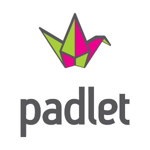

Herramientas y recursos
Para llevar a cabo la infografía no sólo se necesitará trabajo manual sino también de herramientas digitales. En este Padlet se puede ver una selección de herramientas, tutoriales, vídeos y recursos que os pueden resultar útiles.

Si eres docente y estás interesado en esta SdA, en este Symbaloo adjunto una selección de herramientas, apps y tutoriales que he previsto utilizar en el desarrollo de esta SdA.
(Pincha en la imagen)